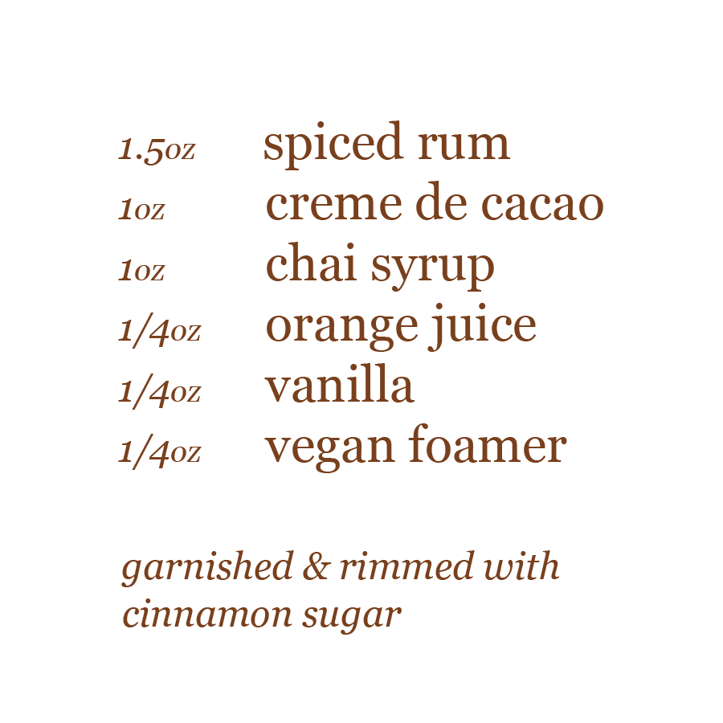

the spirit
the taste of cinnamon, rum, and chai belong together

step by step
1
begin by chilling a martini glass with ice
2
pour the rum, chocolate liqueur, chai, orange juice, vanilla, and foamer into a cocktail shaker
3
before shaking the ingredients, rim the side of the chilled glass with cinnimon sugar, inside and out
4
fill the shaker with ice, seal, and shake for at least 15–30 seconds until the outside of the shaker is frosty
5
double strain the mixture into your chilled glass
6
use a toothpick, swirl the excess cinnamon sugar that sits on the foam
7
enjoy.